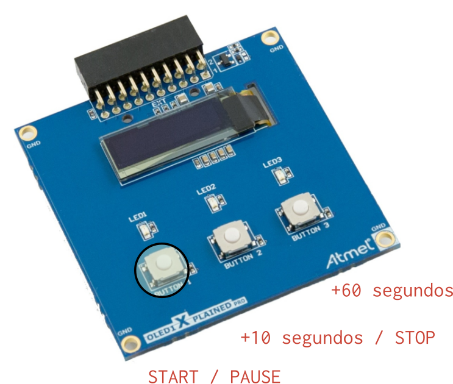
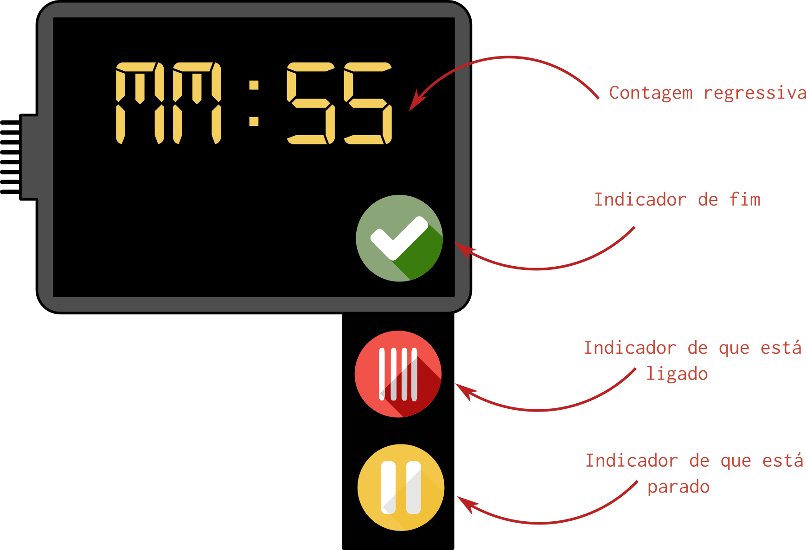

Avaliação 1<<1¶

Microondas!
Nessa avaliação você deve desenvolver um protótipo de um controlador para microondas, com interface gráfica e controle da potência via PWM.
| Duração |
|---|
| 3 horas |
Começando¶
- Atualize os dois repositórios da disciplina
- Crie um repositório no github
- Preencha o forms a seguir:
- (no simulado não tem)
- Copie o projeto exemplo:
RTOS-LCD-maXTouchpara seu repositório
- Repositório:
$ git add *
$ git commit -am "comecando"
Rubrica¶
Atenção
Lei o documento na integra antes de começar
Perde conceito se:
- Você não deve utilizar função de delay, que não a do RTOS
- -½ conceito
- Você não deve utilizar variáveis globais, que não fila e queue
- -½ conceito
C¶
- LCD exibe interface pré definida
- Exibe icone de fim quando acaba
- Exibe icone de em progresso, quando o micro ondas estiver ligado
- Timer implementando
- Botão: incrementa +10 segundos
- Botão: incrementa +1 minuto
- Função de Start/ Stop
A (+ 4 pts) / B (+ 2 pts)¶
- (2 pts) Interface touch
- (1 pt ) Adicionar PWM para controlar potência do microondas
- (1 pt ) Adicionar relógio
- (2 pts) Adicionar ADC para controlar tempo do timer
- (1 pt ) Start sem tempo, adiciona 30 segundos
D/ I¶
- (D) Dois itens de C faltando/errado
- (I) Três ou mais itens de C faltando/errado
Descrição¶
Você deve projetar um protótipo de um controlador de microondas. Essa interface deve possuir um constador regressivo (timer) que indicará quanto tempo o micro ondas ficará ligado, e quanto tempo vai levar para acabar o ciclo atual. Uma vez ligado, a interface deve exibir o icone de que está em funcionamento. E no fim, o icone de que acabou.
O microondas deve possuir três botões (placa OLED1), cada botão servirá para:
Botão 0: Start / Pause/ StopBotão 1: +10 segundos / StopBotão 2: +60 segundos

Quando o microondas estiver funcionando, os LEDs da placa OLED devem estar ligados, quando acabar o ciclo, os leds devem apagarem.
Interface¶
Você deve implementar a interface a seguir:

- Os icones e a fonte já foram convertidos e estão na pasta do exemplo
RTOS-LCD-maxTouch:
digital521.h |
done.h |
pause.h |
on.h |
|---|---|---|---|
| Fonte a ser usada |
Firmware¶
Você deve desenvolver um firmware que possui duas tarefas: Uma responsável por atualizar o LCD e outra responsável pela contagem. A comunicação entre as tarefas e entre tarefas e interrupção deve ser realizada sempre com recursos do RTOS (fila/ semáforo ...).
Start/Stop/Pause¶
O botão de start/stop e pause deve ser da seguinte maneira:
Botao 0: --> Run --> Pause --> Run --> \
Botão 1: \ Stop -->
Botao 0: --> Run --> Pause --> \
Botão 1: \ Stop -->